In this section, we will introduce the idea of population projection matrices. The special case of such matrices for projecting an age-structured population is known as the Leslie matrix, after the British biologist, P.H. Leslie, who first formalized the method in his 1945 paper.
We start with a simple example, where we extend the analysis of population growth to a situation where the population is structured, meaning that different groups of individuals within the population (e.g., age classes, sexes, geographic regions) are characterized by different demographic rates. Assume that we have an organism with two age-classes. Then the population growth is now described by the following two equations:
where \(n_{1}\) is the number in stage 1, \(n_{2}\) is the number in stage 2, \(f_{1}\) is the fertility of stage 1 individuals, \(f_{2}\) is the fertility of stage 2 individuals, and \(p_{1}\) is the survivals of 1’s to age class 2.
One question we wish to answer: Is there a unique exponential growth rate for such a population analogous to the unstructured case? Imagine you start with a total population size (\(N(0) = n_{1}(0) + n_{2}(0)\)) of 10. What will the population look like in one time step? If there are 10 ones and zero twos, then we have
These two populations can only increase at the same rate in the degenerate case where \(f_1=f_2\) and \(p_1=0\). The solution to this apparent paradox is that a structured population will grow geometrically only when the ratios between the different classes of the population remain constant. In the age-structured case, we call this the stable age distribution and in the state-structured case, we call it the stable stage distribution.
These two sets of equations can be represented in the compact notation of matrices and the rules for working with them derived from linear algebra.
First, some definitions. A matrix is a rectangular array of numbers. We typically represent matrices by bold face upper-case letters. We indicate an element of a matrix by the lower case letter in plain face, indexed by subscripted row followed by column numbers:
\[
\mathbf{A} = \left[ \begin{array}{cc}
a_{11} & a_{12} \\
a_{21} & a_{22}
\end{array} \right]
\] The element \(a_{12}\) therefore represents the matrix entry from the first row and second column of matrix \(\mathbf{A}\)
A vector is simply a list of numbers. Vectors are typically bold face lower-case letters and elements are indexed by their position in the vector with a subscripted number. Vectors can come as either row or column vectors.
The Leslie matrix is a special matrix for demography and population biology. It is referred to as a Leslie Matrix after its inventor Sir Paul Leslie (Leslie 1945, 1948). A Leslie matrix contains: (1) age-specific fertilities along the first row, (2) age-specific survival probabilities along the subdiagonal, and (3) zeros everywhere else. Here is an example of a \(5 \times 5\) Leslie matrix:
The Leslie matrix is a special case of a projection matrix for an age-classified population. With age-structure, the only transitions that can happen are from one age to the next and from adult ages back to the first age class. Can you imagine a projection matrix structured by something other than age?
A couple points: all the age classes are the same width (cf. an abridged life table). This is also the projection interval. So if your age classes are five years wide, each step of your population projection is five years. If you want to get an annual growth rate, you need to divide by five. If you need to have classes with different durations, you can’t use a Leslie matrix. You need a matrix that models more general stages. The projection interval will remain constant, but you can have different amounts of time spent (sojourn times) in different stages. More on this later.
Leslie matrices are sparse. Most of their elements (particularly when you have more age classes) are zero. These elements are known as structural zeros. By the definition of our life cycle, they represent impossible transitions. The Leslie matrix contains only two logical transitions: individuals get one age-class older per time step; new individuals can be created from older ones. For example, in an age-structured life cycle, you can’t make a transition from the fourth to the second age class. Element \(a_{42}\) is a structural zero. A structural zero contrasts with a transition that is logically possible in our life cycle but just happens to have a transition probability/rate equal to zero.
7.3.1 The Life Cycle Diagram
It is useful to think of the matrix entries in a life-cycle manner. The entry \(a_{ij}\) is the transition probability of going from age \(j\) to age \(i\):
\[
a_{ij} \equiv a_{i \leftarrow j}.
\]
So these rates mean that you end up in the row index and start in the column index. It’s worth noting that this convention is different than the use of matrices in many applications. For example, social mobility matrices, that have historically modeled the occupational status of a son compared to his father, typically move individuals from row to column. Either way works; you just need to know what the convention is in any given field.
We can formalize the life-cycle approach by noting the linkages between the projection matrix and the life-cycle graph. A life-cycle graph is a digraph (or directed graph) composed two things: (1) nodes, which represent the states (ages, stages, subgroups, localities, etc.) and (2) edges, which represent transitions between states. The following figure presents a simple age-structured life cycle with five ages and reproduction in age classes 2-5.
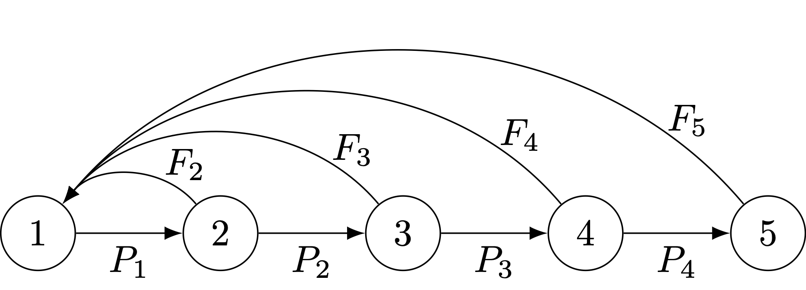
An age-classified life-cycle graph with five age classes.
There are a number of desirable properties of demographic projection matrices. These properties are required for all the important results that we will discuss to apply. Every demographic matrix is non-negative (all its entries are greater than or equal to zero). In general, we are only interested in non-negative matrices since all survival probabilities and fertility rates must be non-negative. Indeed, any rate of interest in demography must be positive. We have seen that it is important for the elements of a structured population model to come to some sort of stable distribution. However, not all population models do this. Fortunately, the conditions that allow a population to converge to its stable age distribution are simple and the use of the life cycle graph greatly facilitates determining if the conditions do indeed apply. In order for a population to converge on its stable population structure, it must be irreducible. A matrix is irreducible if and only if there is a path between every node and every other node in the life cycle graph. Irreducibility is necessary but not sufficient for stability. The second, sufficient condition is called primitivity. An irreducible non-negative matrix is primitive if all its elements become positive when raised to sufficiently high powers. A matrix is primitive if the greatest common divisor of all loops in the corresponding life-cycle graph is 1.
Here are two examples of reducible life cycles that will not converge to stable distributions.
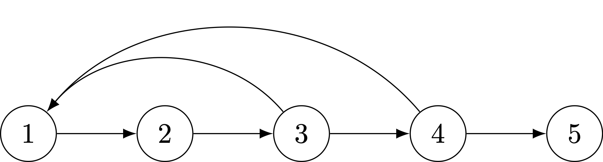
A reducible life cycle, with a post-reproductive stage.
The life-cycle graph makes it easy to determine whether there are any stages that cannot contribute (even indirectly) to another stage. A common case of such a life cycle is one with post-reproductive stages. In this graph, age-class 5 individuals cannot contribute to any of the preceding classes (because they’re post-reproductive!).
There are other ways to be reducible. Here is a fanciful example.
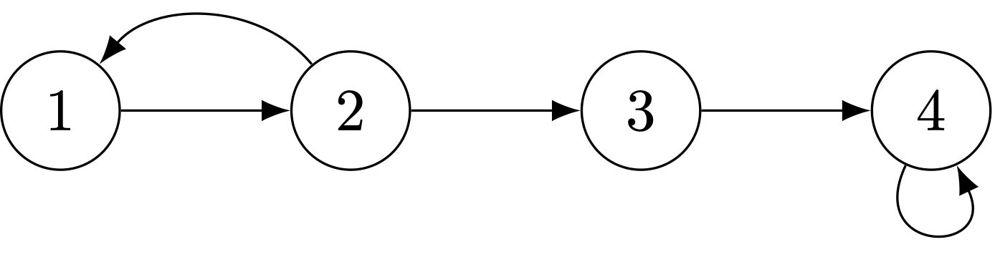
A weird reducible life cycle with who knows what going on!
Next, we have an imprimitive life cycle. Reproduction only occurs in the even ages. This causes bulges in the age pyramid that never get evened out. Consequently, the population never converges to a stable age distribution. Be careful with the terminology as it can be confusing: you want your matrix to be irreducible but primitive, not reducible and imprimitive.
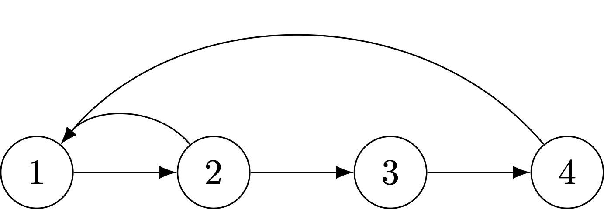
A imprimitive life cycle, where reproduction only happens in ages that are multiples of each other.
Two ways of insuring that a life cycle will be primitive are: (1) having two consecutive age classes in which reproduction occurs or (2) having a life cycle with a self loop.
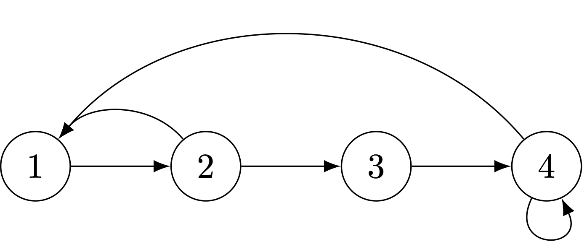
The same life cycle with a self-loop makes it primitive.
This example is a bit of a preview. By putting a self-look on the fourth age class, we’ve turned it from an age class into a stage. The matrix representation of this life cycle will include an element on the diagonal of the matrix in the fourth row and fourth column.
7.4 Growth of Structured Populations
Having redefined the population model in matrix form, we can write it in a more compact notation of matrix algebra:
\[
\mathbf{n}(t+1) = \mathbf{A} \mathbf{n}(t)
\]
Let’s now assume that there is a solution to the exponential growth model in a structured population. Write the population model as:
\[
\mathbf{An} = \lambda \mathbf{n}
\]
Now solve for \(\lambda\). The rules of linear algebra make this a little trickier than just dividing both sides by \(\mathbf{n}\). Here are the steps we need:
\(\mathbf{I}\) is an identity matrix of the same rank as \(\mathbf{A}\) (ones along the diagonal, zeros elsewhere).
It’s a fact of linear algebra, that the solution to this equation exists only if the determinant of the matrix \((\mathbf{An} - \lambda \mathbf{I})\) is zero. For the \(2 \times 2\) case, the determinant is simple. For any \(2 \times 2\) matrix the determinant is given by:
\[ \det \left[ \begin{array}{cc}
a & b \\
c & d
\end{array} \right] = ad - bc
\]
Determinants of matrices of larger rank are, necessarily, more complex.
So, using our fact of linear algebra, we can proceed with the calculation:
Matrix \(\mathbf{A}\) has two roots: \(\lambda=2\) and \(\lambda=-0.5\). These roots are known as the eigenvalues of matrix \(\mathbf{A}\). One of these eigenvalues is the growth rate of the population, but which one? For this \(2 \times 2\) example, there are two roots. For larger matrices, there are more. In fact, there are always as many eigenvalues as there are rows (or columns since we are dealing with square matrices) in the matrix. One could imagine this getting a bit hairy. Thankfully, a handy theorem from linear algebra, known as the Perron-Frobenius theorem, tells us that a square, non-negative matrix that is irreducible and primitive will have a single eigenvalue which is positive, real, and strictly greater than all the others. Our example fulfills these criteria, so we may conclude that the growth rate of this population is \(\lambda=2\). This is reassuring since a negative growth rate is an idea that’s a little hard to fathom – at least for the moment. Note that the eigenvalues are the multiplicative growth factors, not instantaneous rates. A declining population will not have a negative multiplicative growth factor! It will have a value of \(1>\lambda>0\). Take the logarithm of that to get the growth rate and that will be negative.
We began this chapter with the statement that for an age-structured population to grow geometrically, it must maintain constant ratios between its age classes. There is a special vector that goes hand-in-hand with the eigenvalue called, strangely enough, an eigenvector. Let’s keep up with our example. Remember that the eigenvalues of this model are \(\lambda = 2\) and \(\lambda = -0.5\). That means that we can write our model as:
We now solve this system to two equations and find that \(n_{1} = 4n_{2}\) is a solution. That is, if there are four times the number of stage ones as there are stage twos, the population will grow geometrically.
7.4.1 Projection, The Simplest Form of Analysis
Most demographers use matrices primarily for projection of populations into the future. Projection is in fact the simplest form of analysis of a population model. When you make a projection, you ask the question: “How big will the population be if the following rates apply for the next \(t\) years?” Your projection will only apply to the specific assumptions you build into it, but it may nonetheless yield more general, qualitative insight.
Consider the following plot of a population that does not start off in its stable age distribution. Even though the rates remain constant, the population oscillates around its general upward trajectory. If we let it run long enough, the oscillations dampen and we see the straight line on semilog axes, indicating geometric increase.
px <-c(.92,.95,.95,.95,.95,.95) # some arbitrary survival probs.mx <-c(0,0,.05,.1,.25,.5,1) # some arbitrary fertilitieslx <-c(1,px) # a quick way to get lx from pxlx <-cumprod(lx)sum(lx*mx) # the net reproduction number
[1] 1.410478
k <-length(px)+1# i.e., 7A <-matrix(0, nrow=k, ncol=k) # make a 7x7 matrix of zerosA[row(A) ==col(A)+1] <- px # put px on the subdiagA[1,] <- mx # put mx on first row## now project# initial population vectorno <-matrix(c(0,0,0,0,0,1,1),nrow=7)pop <- no# initiate a matrix to hold the projectionsN <-NULL# add initial populationN <-cbind(N,pop)# number of time steps to projecttmax <-100# projectionfor (i in1:tmax){ pop <- A %*% pop N <-cbind(N,pop)}## plotplot(0:100,log(apply(N,2,sum)),type="l",col="blue", lwd=2,xlab="Time", ylab="log(Population Size)")
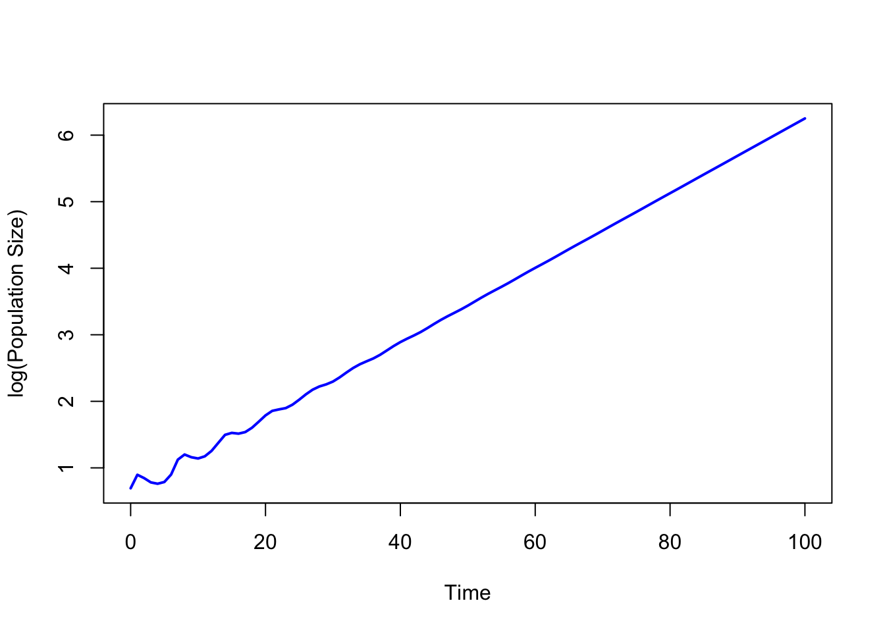
The population, which starts very far away from a stable age distribution, oscillates for a about 40 time periods before it settles into geometric growth (linear on a log scale).
7.5 Constructing a Leslie Matrix
That example is cute, but we want to know how to construct Leslie matrices from actual demographic data.
Not gonna lie: the accounting to make a Leslie matrix is a bit hairy in its details. Conceptually, however, it is simple. The first row of the matrix contains the fertility elements. The subdiagonal contains the survival elements. How we move from demographic data to matrix elements is a bit tricky, but not actually difficult.
A good thing to get out of the way deals with age classes. We typically index the matrix entries with \(i\) and \(j\), such that \(a_{ij}\) is the movement from column-index \(j\) to row-index \(i\). The data that we draw from a life table and tabulated age-specific fertility data are typically indexed with an \(x\), such that \(_nL_x\) is the person-years lived between \(x\) and \(x+n\). Let’s just call it like it is and note that the conversion is bound to be awkward. If, as usual, the age at the start of the age class is \(x\) and the width of the age interval is \(n\), then \(x = (j-1)\, n\). Survival from age-class one to age-class two is thus \(P_1\) as the index 1 corresponds to \((2-1) \cdot 5 = 5\). For the fertility elements, \(F_3\) is the fertility of 10-14 year olds (hopefully zero).
7.5.1 Subdiagonal
The subdiagonal elements of our square matrix are the survival probabilities of moving from the column index to the row index. However, the fact that our age classes are typically greater than one year means we need to think a bit harder about how we calculate these probabilities. Suppose we have five-year age classes (which is common). This means that there are actually five one-year cohorts who contribute to each age class in our projection model. Suppose we want the survival probability moving from the second to the third age class in a matrix with five-year age classes (i.e., \(a_{32}\), which moves individuals from age 5 to age 10). In terms of our life-table survivorship values, the size of the youngest cohort in the starting age class will be \(l_5\) and the size of the oldest cohort will be \(l_10\). The average of these two is \((l_5 + l_10)/2\), and the width of the interval is five years, so we have \(5/2(l_5+l_10)\). This is the approximation we use in constructing person-years lived for the age class 5-9, \(_5L_5\). The same logic applies to the receiving age class, so the transition probability is \(P_2 = {_5}L_{10}/{_5}L_5\) (note the subscript of 2 means this is the survival to the second age class in our model, which is divided into five-year intervals; \(5 \times 2 = 10\), the receiving age).
The general rule then is simply that the subdiagonal elements of the Leslie matrix are:
\[
a_{i+1,i} = \frac{_nL_{i+1}}{_nL_i},
\]
the ratio of the person-years lived in the receiving age class to the person-years lived in the sending age class.
7.5.2 First Row
Alas, the fertility values along the first row are even hairier. In a nutshell, fertility rates can change quite rapidly with respect to even modestly-wide age intervals. This means we need to do some averaging across successive age classes. Note that this averaging involves more than just fertility as well, since a certain fraction of women, who may have reproduced, will die before reaching the next age class. We also know that infancy is the most dangerous year in the human life cycle, so we need to account for the fact that a woman may have given birth multiple times, and lost some of those infants, in a single age class. Finally, the Leslie matrix is typically a one-sex model (two-sex models entail more complex stage-based structure), so we need to transform the observed age-specific fertility rates into female-only fertility rates.
I will not belabor this, while I think about more elegant ways to explain all the steps to constructing the \(F_i\) entries. Here’s the general formula, which I’ve tried to write in as compact a form as possible.
\[
F_i = \frac{_nL_0}{2l_0}(m_i + P_i m_{i+1})
\]
Some things to note: \(m_i\) is the maternity rate in age-class \(i\). It is the product of the age-specific fertility rate \(_nF_x\) and the fraction of births that are female (typically a bit under 50%). As noted above \(P_i = _nL_{x+1}/{_n}L_x\). Don’t forget to adjust your fertility rates to represent a single sex or your population growth rates will be way too high!
Remember that \(l_0\) is the radix of the life table. This is the size of the synthetic cohort that defines our period life table. We often take \(l_0 = 1\), particularly in biological applications, but demographers conventionally use a radix of \(l_0=100000\). \(_nL_0\), of course, is the person-years lived in the first age-class.
7.5.3 Fun facts about Eigenvalues
The Perron-Frobenius Theorem guarantees that one eigenvalue will be real, positive and absolutely greater than all others. This is called the dominant eigenvalue of the projection matrix. The dominant eigenvalue of the projection matrix is the asymptotic growth rate of the population described by that matrix. The dominant eigenvalue of the projection matrix is also the fitness measure of choice for age-structured populations. \(\log(\lambda)/n = r\). That is, the natural logarithm of the dominant eigenvalue, divided by the length of the projection interval (or age class), gives the annual rate of increase of the population. By calculating the eigenvalues of a projection matrix, you get lots of other important information.
7.6 Left Eigenvectors of the Projection Matrix
In matrix algebra, multiplication is not commutative, \(\mathbf{A B} \neq \mathbf{B A}\). Thus, the left eigenvector of a matrix is distinct from the right eigenvector:
where the asterisk denotes the complex-conjugate transpose.
Define \(\mathbf{U}\) as a matrix of eigenvectors where each column \(i\) is the \(i\)th eigenvector of \(\mathbf{A}\), and \(\mathbf{\Lambda}\) as a matrix with the eigenvalues of \(\mathbf{A}\) along the diagonal and zeros elsewhere, we have
This is the matrix formula for an eigensystem, suggesting that the rows of \(\mathbf{U^{-1}}\) must be the left eigenvectors of \(\mathbf{A}\).
The left eigenvector, corresponding to the dominant eigenvalue, of a demographic projection matrix has a particular interpretation. It represents the age-specific reproductive value of the population. The reproductive value of the \(i\)th age class is the expected contribution of individuals age \(i\) to the population in the distant future. This is an important concept in evolutionary biology which we take up repeatedly.
7.7 Spectral Decomposition of the Projection Matrix
What do we mean by reproductive value being the contribution to the population in the distant future? Suppose we are given an initial population vector, \(\mathbf{n}(0)\). We can write \(\mathbf{n}(0)\) as a linear combination of of the right eigenvectors, \(\mathbf{u}_i\) of the projection matrix \(\mathbf{A}\).
We can collect the eigenvectors into a matrix where each column \(i\) is simply the \(i\)th eigenvecotr and the coefficients into a vector and re-write this equation as:
\[
\mathbf{n}(0) = \mathbf{U} \mathbf{c}.
\]
From this, it is clear that \(\mathbf{c} = \mathbf{U}^{-1} \mathbf{n}(0)\). \(\mathbf{U}^{-1}\) is just the matrix of left eigenvectors (or their complex-conjugate transpose), so \(c_i = \bf{v}_i^* \mathbf{n}(0)\).
Project the initial population vector \(\mathbf{n}(0)\) forward by multiplying it by the projection matrix \(\mathbf{A}\):
This is known as the Spectral Decomposition of the projection matrix \(\mathbf{A}\)
It is instructive to compare this to the solution for population growth in an unstructured (i.e., scalar) population, characterized by a geometric rate of increase \(a\) for one time step
\[ N(t+1) = a N(t), \] and for an arbitrary number of steps
\[ N(t) = N(0) a^t. \]
For the scalar case, the solution is exponential. For a \(k\)-dimensional matrix, this solution means that the population size at time \(t\) is a weighted sum of \(k\) exponentials. While both depend on the initial conditions, the \(k\)-dimensional case weights the initial population vector by the reproductive values of the \(k\) classes.
7.8 Matrix Perturbations
This derivation follows Caswell (2001). As a note of interest, I took the first edition (1989) of Caswell’s book to the field in Borneo with me as a graduate student. I still have that book. It smells like rainforest. I have Hal to thank for much of what I know about matrix population models and population biology more generally. We start from the general matrix population model:
\[
\mathbf{A u} = \lambda \mathbf{u}
\]
Now we perturb the system, adding a scootch to each of the terms
From the definition of a left eigenvector, we know that the first term on the left-hand side is the same as the first term on the right-hand side. Similarly, because the right and left eigenvectors are scaled so that \(\langle \mathbf{w,v} \rangle = 1\), the last term simplifies to \(d\lambda\). We are left with
When we do a perturbation analysis, we typically only change a single element of \(\mathbf{A}\). Thus the basic formula for the sensitivity of the dominant eigenvalue to a small change in element \(a_{ij}\) is
In other words, the sensitivity of fitness to a small change in projection matrix element \(a_{ij}\) is simply the \(i\)th element of the left eigenvector weighted by the proportion of the stable population in the \(j\)th class (assuming vectors have been normed such that \(\langle \mathbf{v,u} \rangle =1\)). Keep that in mind.
Eigenvalue Sensitivities are Linear Estimates of the Change in \(\lambda_1\), Given a Perturbation, as illustrated in the following figure. Here, we will recycle and modify our code from discussion of the marginal value theorem in chapter Chapter 3.
x <-seq(1,18,length=500)# fitness is an unknown function, but probably fp> 0 fpp < 0# fp == deriv of f; fpp == 2nd deriv of ff <-function(x) {1-exp(-0.2*(x-1))}# derivative of the utility functionfprime <-function(x) {0.2*exp(-0.2*x)*exp(0.2)}# f + fp*(z-x) = 0# z = x -(f/fp)# solve for tangency; find the root of thisxinter <-function(x) {return(x -f(x)/fprime(x))}soln <-uniroot(xinter,c(0,10))#xx <- seq(7,10,length=100)plot(x,f(x), type="l", lwd=2, xaxs="i", yaxs="i",axes=FALSE, frame=TRUE,xlab=expression(a[ij]),ylab=expression(lambda),xlim=c(0,20), ylim=c(0,1))lines(x,(f(soln$root)/soln$root)*x,col="red")segments(soln$root,0,soln$root,f(soln$root), lty=2, col="red")segments(0,f(soln$root),soln$root,f(soln$root), lty=2, col="red")
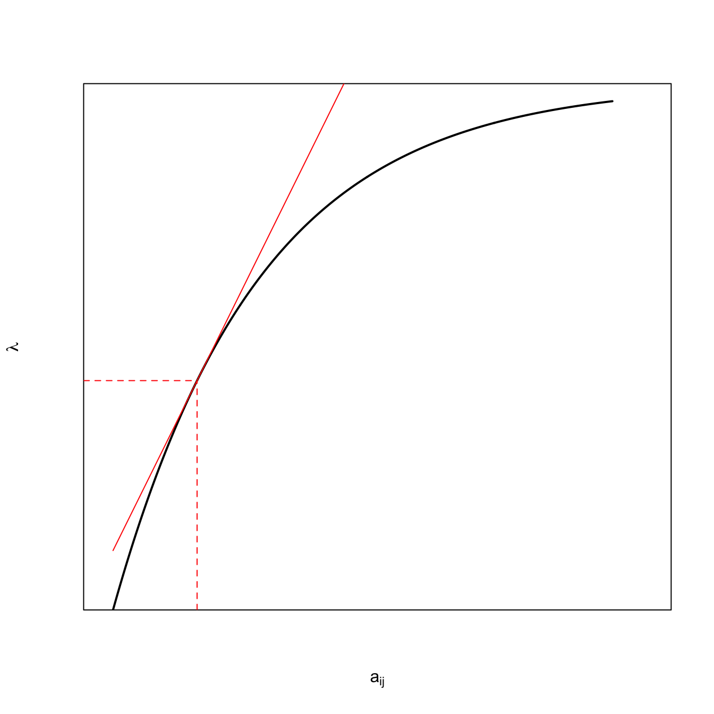
Note that because I was recycling code, I kludged a bit. It’s a schemaic plot, so the values on the axes are meaningless, so I suppressed them using axes=FALSE and frame=TRUE.
The black curve is a hypothetical fitness function of the matrix element \(a_{ij}\). Presumably, in the absence of any trade-offs, an increase in this matrix element should increase fitness (those elements are survival probabilities and fertility rates, after all). However, we expect diminishing marginal improvement as we increase the value by a lot. Hence, the curve is concave. The red solid line is a tangent to the curve. It is a linear approximation of the slope of the curve at the value of \(a_{ij}\). For small perturbations, this should provide a decent measure of how much fitness will change. Note that the black line is, in fact, quite linear for the region around its observed value (dashed red lines), such that it’s hard to tell exactly where the tangent hits without those dashed lines.
7.9 Elasticities
Another measure of the change in a matrix given a small change in an underlying element is the eigenvalue elasticity:
Elasticities are proportional sensitivities: they measure the linear change on a log scale. Given a 1% change in vital rate \(a_{ij}\) what percentage change will accompany \(\lambda\)? This is an elasticity. A very important property of elasticities is that they sum to one: \(\sum_{i,j} e_{ij} = 1\). As such, one can think of the elasticity of \(\lambda\) with respect to \(a_{ij}\) as measuring the proportion of the total selection on that trait. This interpretation is somewhat limited because it is conditioned on all other traits remaining constant and on the change being small.
Another interesting property of elasticities is that the summed elasticities of all outgoing transitions from a stage will be equal to the summed elasticities of all incoming transitions. In terms of the projection matrix, this means that the elasticities of all elements in column \(i\) will be equal to the summed elasticities of row \(i\). It also provides us with some intuition about why the elasticities of fertility are so much lower than the elasticities of survival, at least earlier in the reproductive career.
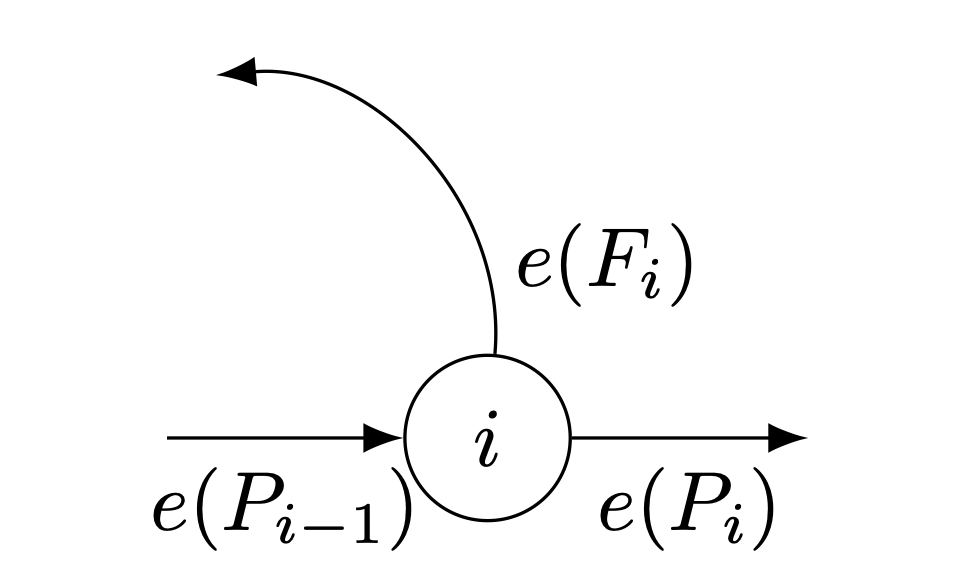 This fact also provides inuition about why the elasticity of pre-reproductive survival (especially infant survival) is so high.
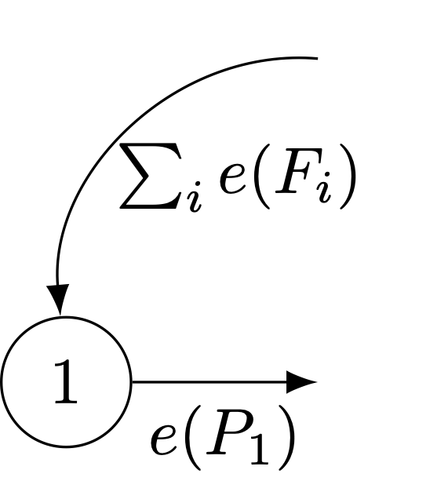
The elasticity of infant survival is equal to the sum of all the fertility elasticities. Moreover, the elasticity of subsequent, pre-reproductive survival is the same as all prior previous survival elasticities in the life cycle.
7.9.1 Relationship to Hamilton
The elasticities of the sub-diagonal elements of the Leslie matrix (i.e., the \(P_i\) from the life-cycle graph) are essentially the same thing that Hamilton (1966) calculates by differentiating the discrete-time Euler-Lotka equation. A major advantage of the matrix approach is the ease with which the sensitivities and elasticities can be calculated. Furthermore, the approach is easily extended to other types of structured models (i.e., not just age-structure) and to related measures such as the second derivatives of fitness, which provide an estimate the form of selection (stabilizing, directional).
Conceptually, it is illuminating to think of the force of selection on a given life-cycle transition as being simply a product of the reproductive value of the receiving stage and the fraction of the stable age distribution from the sending stage.
7.10 Calculating Sensitivities
## Matrix A from above# calculate eigenvalues/eigenvectorsev <-eigen(A)# need to make sure we get the dominant eigenvaluelmax <-which(Re(ev$values)==max(Re(ev$values)))# take real part (imaginary part will be zero anyway)lambda <-Re(ev$values[lmax])# right eigenvectorsU <- ev$vectors# dominant right eigenvectoru <-abs(Re(U[,lmax]))# left eigenvectors are the complex conjugate transpose of the inverse of UV <-Conj(solve(U))# dominant left eigenvectorv <-abs(Re(V[lmax,]))# outer product of v and us <- v%o%u# sensitivities of non-existent transitions are zero s[A ==0] <-0s
Sensitivities of survival are generally higher than those for fertility, except for the last age class. Survival and fertility sensitivities decline with age, but the decline is more pronounced for survival.
Let’s do something a little more interesting. We’ll calculate mortality and fertility schedules from the three countries in the goodman data in my package demogR. We can then use those data to construct Leslie matrices.
require(demogR)data(goodman)## Madagascarmlt <-with(goodman, life.table(x=age, nDx=mad.nDx, nKx=mad.nKx))mmx <- goodman$mad.bx/goodman$mad.nKx## Venezuelavlt <-with(goodman, life.table(x=age, nDx=ven.nDx, nKx=ven.nKx))vmx <- goodman$ven.bx/goodman$ven.nKx## USAult <-with(goodman, life.table(x=age, nDx=usa.nDx, nKx=usa.nKx))umx <- goodman$usa.bx/goodman$usa.nKx## Now make the Leslie matricesmad <-leslie.matrix(lx=mlt$nLx, mx=mmx)ven <-leslie.matrix(lx=vlt$nLx, mx=vmx)usa <-leslie.matrix(lx=ult$nLx, mx=umx)## Calculate everything using eigen.analysis function in demogRmea <-eigen.analysis(mad)vea <-eigen.analysis(ven)uea <-eigen.analysis(usa)## you can plot leslie.matrix objects in demogRpar(mfrow=c(1,3))plot(mea$sens, col=c("blue4","magenta4"), lwd=3)legend("topright",c("survival","fertility"),lwd=3, col=c("blue4","magenta4"))title("Madagascar")## venplot(vea$sens, col=c("blue4","magenta4"), lwd=3)legend("topright",c("survival","fertility"),lwd=3, col=c("blue4","magenta4"))title("Venezuela")## usaplot(uea$sens, col=c("blue4","magenta4"), lwd=3)legend("topright",c("survival","fertility"),lwd=3, col=c("blue4","magenta4"))title("USA")
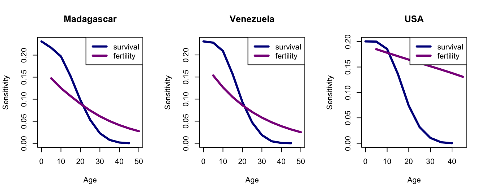
Compare the sensitivities to the elasticities.
## you can plot leslie.matrix objects in demogRpar(mfrow=c(1,3))plot(mea$elas, col=c("blue4","magenta4"), lwd=3)legend("topright",c("survival","fertility"),lwd=3, col=c("blue4","magenta4"))title("Madagascar")## venplot(vea$elas, col=c("blue4","magenta4"), lwd=3)legend("topright",c("survival","fertility"),lwd=3, col=c("blue4","magenta4"))title("Venezuela")## usaplot(uea$elas, col=c("blue4","magenta4"), lwd=3)legend("topright",c("survival","fertility"),lwd=3, col=c("blue4","magenta4"))title("USA")
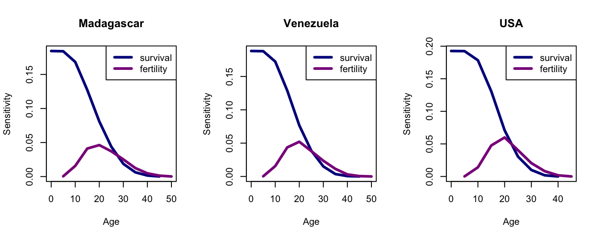
Hal Caswell has an open-access text on sensitivity analysis and matrix methods in demography.
7.11 Some Demographic Analysis
These are four populations that span what I’ve called the human demographic space (Jones 2009): Ache, and !Kung hunter-gatherers, Venezuela from 1965, and the USA from 2002. I show a plot of this space in chapter Chapter 2. The data are somewhat heterogeneous. Venezuela come from tabulated values of deaths, births, and exposed populations listed in the demographic compendium of Keyfitz & Flieger (1971). The USA mortality data come from HMD and the ASFR data come from the US Census Bureau web site (cited in Jones 2009). Both mortality and fertility data for the !Kung and Ache come from the monographs by Howell (1979) and Hill & Hurtado (1994) respectively.
The code that follows is necessarily a bit messy because the data are a little different for each population. What I do is get the data necessary to construct Leslie matrices with five-year age classes. I then use smoothing splines to interpolate one-year values. This meant I was able to plot smoother curves in the 2009 paper, among other things. Interpolating with splines is a good trick to have in your toolkit, regardless.
require(demogR)## load the heterogeneous datasource("./data/demog_data_4pops.R")# Acheache.lt <-life.table(x=ache.age,nDx=ache.nDx,nKx=ache.nKx,type="cd")ache.lx <- ache.lt[,"lx"]## fit the splinesalxspl <-smooth.spline(ache.lt$x,ache.lt$lx)## interpolate to one-year valuesalx1 <-predict(alxspl,seq(0,50,by=1))$y## calculate px values from lxapx <-exp(diff(log(alx1)))## fit splines to fertilityamxspl <-smooth.spline(seq(10,45,by=5), ache.mx/5)## interpolate to one-year valuesmx1 <-predict(amxspl, seq(10,50,by=1))$y# replace any negative values with zeromx1[mx1<0] <-0## construct 50 x 50 Leslie matrix## uses demogR functions leslie.row1 and odiag; also eigen.analysisr1 <-leslie.row1(c(rep(0,9),mx1),px=apx,SRB=1)ales <-odiag(apx[1:46],-1)ales[1,] <- r1[1:47]# analysisea.ache <-eigen.analysis(ales)# sensitivitiesasf <- ea.ache$sensitivities[1,]ass <- ea.ache$sensitivities[row(ales) ==col(ales)+1]# elasticitiesaef <- ea.ache$elasticities[1,]aes <- ea.ache$elasticities[row(ales) ==col(ales)+1]## !Kungklxspl <-smooth.spline(kung.age[1:12],kung.lx[1:12])klx1 <-predict(klxspl,seq(0,50,by=1))$ykpx <-exp(diff(log(klx1)))# fertilitykmxspl <-smooth.spline(seq(15,45,by=5), kung.mx/5)kmx1 <-predict(kmxspl, seq(10,50,by=1))$ykmx1[kmx1<0] <-0# Leslie matrixr1 <-leslie.row1(c(rep(0,9),kmx1),px=kpx,SRB=1)kles <-odiag(kpx[1:46],-1)kles[1,] <- r1[1:47]# analysisea.kung <-eigen.analysis(kles)# sensitivitiesksf <- ea.kung$sensitivities[1,]kss <- ea.kung$sensitivities[row(kles) ==col(kles)+1]# elasticitieskef <- ea.kung$elasticities[1,]kes <- ea.kung$elasticities[row(kles) ==col(kles)+1]## USA and Venezuela have death, birth, exposure data, so create life tables## USAusa.lt <-life.table(x=usa.age,nDx=usa.nDx,nKx=usa.nKx)usa.lx <- usa.lt[,"lx"]usa.nMx <- usa.lt[,"nMx"]usa.age <- usa.lt[,"x"]ulxspl <-smooth.spline(usa.age,usa.lx)ulx1 <-predict(ulxspl,seq(0,50,by=1))$yupx <-exp(diff(log(ulx1)))usa.mx <- usa.mx[4:11]umxspl <-smooth.spline(seq(15,50,by=5), usa.mx/5)umx1 <-predict(umxspl, seq(10,50,by=1))$yumx1[umx1<0] <-0r1 <-leslie.row1(c(rep(0,9),umx1),px=upx,SRB=1)ules <-odiag(upx,-1)ules[1,] <- r1### predicted fertilities for ages greater than 49 are NAules <- ules[1:49,1:49]# analysisea.usa <-eigen.analysis(ules)# sensitivitiesuss <- ea.usa$sensitivities[row(ules) ==col(ules)+1]usf <- ea.usa$sensitivities[1,]# elasticitiesues <- ea.usa$elasticities[row(ules) ==col(ules)+1]uef <- ea.usa$elasticities[1,]## Venezuelaven.lt <-life.table(x=ven.age, nDx=ven.nDx, nKx=ven.nKx)ven.lx <- ven.lt[,"lx"]ven.age <- ven.lt[,"x"]vlxspl <-smooth.spline(ven.age,ven.lx)vlx1 <-predict(vlxspl,seq(0,50,by=1))$yvpx <-exp(diff(log(vlx1)))ven.mx <- ven.bx/ven.nKxven.mx <- ven.mx[4:12]vmxspl <-smooth.spline(seq(10,50,by=5), ven.mx/5)vmx1 <-predict(vmxspl, seq(10,50,by=1))$yvmx1[vmx1<0] <-0r1 <-leslie.row1(c(rep(0,9),vmx1),px=vpx,SRB=1)vles <-odiag(vpx,-1)vles[1,] <- r1vles <- vles[1:49,1:49]#analysisea.ven <-eigen.analysis(vles)# sensitivitiesvsf <- ea.ven$sensitivities[1,]vss <- ea.ven$sensitivities[row(vles) ==col(vles)+1]# elasticitiesvef <- ea.ven$elasticities[1,]ves <- ea.ven$elasticities[row(vles) ==col(vles)+1]
Now we can construct some plots. First, let’s plot reproductive value and age structure.
Now plot the sensitivities and the elasticities. I commented out the legends because they get too busy with multiple plots in a single figure. It’s good to be able to attach a legend though if you ever need the figure without all the previous context.